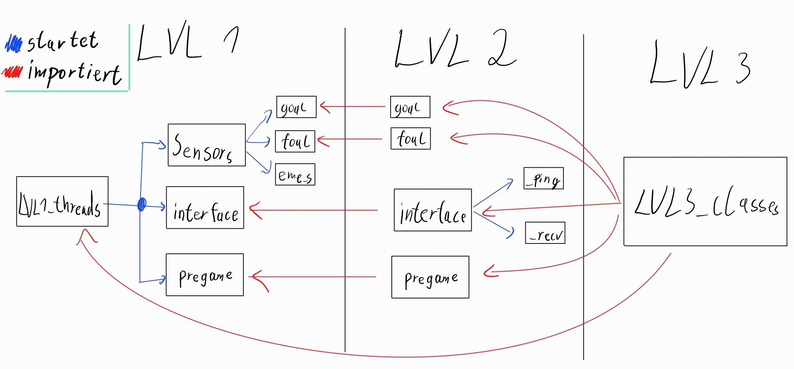

Die Spielsteuerung des Kickers#
Die Spielsteuerung ist die zentrale Logik des Kickers. Sie besteht aus sechs python-Skripts, die in drei Ebenen oder Level unterteilt sind:
Level 1: die oberste Ebene, in der alle Threads gestartet werden
Level 2: Subsysteme, die parallel ausgeführt werden
Level 3: hier sind globale Variablen vorhanden, auf die mehrere LVL2-Programme zugreifen; sowie Übersicht über die Routinen und Reaktionen auf Events in Level 2
Diese Hierarchie entsteht daraus, dass Variablen in ein Python-Skript importiert werden können, aber nicht wieder zurückgegeben werden können. Wenn ein Subsystem den Punktestand ändert, und ein anderes diesen auslesen will, muss dieser Wert in einer Import-Ebene unter beiden liegen - dafür ist Level 3 vorhanden. Diese Problematik gäbe es mit einer einzigen Datei nicht; der Übersicht halber wurden die Subsysteme aber aufgeteilt. Außerdem ermöglicht die Aufteilung ein besseres Arbeiten mit GIT, da einfacher an mehreren Dateien gleichzeitig gearbeitet werden kann, ohne viele merge conflicts zu erzeugen.

Hauptdatei (LVL1_threads.py)#
Diese Datei ist die Datei, von der aus alles aufgerufen wird und Threads gestartet werden. Diese Datei sollte automatisch nach booten des Pis gestartet werden, um Spiele zu ermöglichen. Dieses Skript muss als Admin ausgeführt werden, da GPIO in LVL2 sonst nicht verwendet werden kann. Eine Ausnahme der Skript-Anordnung stellt hier die Not-Aus-Routine dar, da sie nicht auf Level 2 sondern auch in Level 1 enthalten ist. Dadurch wird gewährleistet, dass die Funktion immer verfügbar ist und nicht eine andere Datei durch ihr Fehlen die Not-Aus-Funktion beeinträchtigt. (Das System wurde außerhalb des Labors nicht in Betrieb genommen und der Taster wurde nicht eingebaut. Es war auch ein normaler Taster und kein geeigneter Unterbrecher.)
Torerkennung (LVL2_goal_detection.py)#
Zwei Pins des GPIO des Raspberrys werden auf LOW geprüft, was beduetet, dass ein Reflektionslichttaster in der Ballrückgabe ausgelöst wurde. Muss als Admin ausgeführt werden (bzw. LVL1, das LVL2 importiert).
Der Code ist sehr übersichtlich und einfach zu verstehen. Die Funktion init() muss aufgerufen werden, bevor der restliche Code in goal() benutzt werden kann. GPIO.setmode(GPIO.BOARD) bedeutet, dass als Pinnummern nicht der Name des Pins (z. B. GPIO26), sondern die Position verwendet wird. Alle geraden Pinnummern sind in der rechten Spalte des GPIOs und alle ungeraden links. Pin 40 ist der letzte Pin.
goal() ist die Funktion, die als Thread endlos laufen soll. Ist die Spielphase “ingame”, werden konstant die beiden GPIO-Pins geprüft, an denen die Datenpins der beiden Sensoren zur Torerkennung angeschlossen sind. Löst ein Sensor aus (Pin fällt auf LOW), wird die Funktion lvl3.react_goal() mit der Nummer des Spielers aufgerufen. Läuft kein Spiel, ist die Funktion im idle-Zustand (beobachte CPU-Vollast in einzelnen Kernen könnte evtl. hierdurch entstehen, nicht überprüft).
Kurbelerkennung (LVL2_foul_detection.py)#
Die Kurbelerkennung besteht aus der Sicht des Kickers nur aus zwei Arduinos, die bei einem Foul HIGH melden. Zwei Pins des GPIO des Raspberrys werden konstant bei “ingame” auf HIGH geprüft, was beduetet, dass der Arduino einer Spielerseite ein Kurbeln des Spielers detektiert hat. Restliche Funktionalität ist durch Doku der Torerkennung zu verstehen.
Interface (LVL2_interface.py)#
War angedacht zur TCP Kommunikation mit einem zweiten Rechner (AuVAReS auf NVIDIA Jetson). So wird der zweite Rechner über Spielevents informiert und kann selber auch Schlüsselwörter senden, um den Spielablauf zu beeinflussen.
Speicherorte#
Die Schnittstelle ist in der Datei LVL2_interface.py definiert und enthält auch Funktionen und Definitionen in LVL3_classes.py. LVL2_interface.py steuert den Verbindungsstatus, hört auf Schlüsselwörter und interpretiert alle eingehenden Nachrichten. Das Senden von Nachrichten sowie das Verbindungsstatus-Flag und das Finden einer Verbindung sind in LVL3_classes.py definiert. Auf diese Weise können sie leicht von anderen Funktionen aufgerufen werden und die Schnittstelle verwenden, ohne LVL2_interface.py importieren zu müssen.
Als eine Level-2-Funktion wird LVL2_interface.py bei Systemstart in LVL1_threads.py als Thread gestartet.
Struktur#
LvL2_interface.py#
Der Hauptteil der Schnittstelle ist in LVL2_interface.py definiert. Ihre Hauptstruktur ist in der Funktion interface() definiert, die in LVL1_threads als Thread gestartet wird. Innerhalb von interface() gibt es zwei Abschnitte.
Der erste Abschnitt initialisiert das verwendete Schlüsselwortverzeichnis für die Schnittstelle. Dieser Abschnitt enthält auch eine While-Schleife, welche verhindert das die Schnittstellenoperation startet bevor, nach einem Systemstart, eine erste Verbindung gefunden wurde.
Der zweite Abschnitt beinhaltet die Hauptfunktionen der Schnittstelle. Diese werden durch zwei Threads gestartet, von denen jeder eine Funktion ausführt. Die erste Funktion ist _ping(), die ein Ping-Schlüsselwort an den verbundenen Client sendet und den aktuellen Verbindungsstatus überwacht. Der zweite Thread ruft die Funktion _recv() auf, welche es der Schnittstelle erlaubt jederzeit Nachrichten zu empfangen.
LVL3_classes.py#
Ein weiterer Teil der Schnittstelle befindet sich in LVL3_classes.py. Dieser Teil umfasst drei wesentliche Bestandteile der Schnittstelle: die Funktion _find_connection(), die Variable connection_status und die Funktion server_send(). Diese Bestandteile werden von anderen Funktionen, außerhalb LVL2_interface.py benötigt und werden deshalb in Level 3 definiert.
Die Funktion _find_connection() sucht nach einer neuen Verbindung. Es wird angenommen, dass zum Zeitpunkt des Funktionsaufrufs keine Verbindung zu einem anderen Gerät besteht. Da eine gefundene Verbindung durch eine Funktion in LVL3_classes.py definiert wurde, müssen alle Aktionen, welche die Schnittstelle betreffen, dem Objekt connection_type_object zugeordnet werden. Dieses Objekt umfasst das Verbindungsobjekt, wie es vom Modul socket definiert wird. Ein Aufruf dieses Objekts außerhalb von Level 3 könnte beispielsweise so aussehen: LVL3_classes.connection_type_object.eine_funktion().
Die Variable connection_status spiegelt den aktuellen Status einer Verbindung wieder. True bedeutet, dass eine Verbindung besteht, und False bedeutet, dass keine Verbindung besteht. Die bisher nicht erwähnte Funktion set_connection_status() wird verwendet, um den Wert von connection_status auf einen beliebigen Zustand zu setzen.
Die Funktion server_send() kann von jeder Funktion im Code aufgerufen werden, die LVL3_classes.py importiert hat. Sie ermöglicht es jedem Teil des Codes, eine Nachricht an ein verbundenes Gerät zu senden. Die Funktion beinhaltet automatisch alle notwendigen Schritte für eine erfolgreiche Übertragung.
Empfangen von Nachrichten, ACK und NACK#
Konzept#
Das System ist so konzipiert, dass es immer auf eingehende Nachrichten hört, eine ACK-Nachricht sendet und dann auf die empfangene Nachricht reagiert. Während einer Reaktion kann keine andere Nachricht empfangen werden! Das System kann jedoch während einer Reaktion Nachrichten senden.
Wenn ein Schlüsselwort empfangen wird, wird eine Bestätigung (ACK) gesendet. Ein ACK funktioniert wie ein weiteres Schlüsselwort, mit der Einschränkung, dass es nur gesendet wird, wenn sein Schlüsselwort empfangen wurde. Der Sender des Schlüsselworts kann somit überprüfen, ob ein gesendetes Schlüsselwort empfangen wurde. Die Schnittstelle kann auf ein empfangenes ACK genauso reagieren wie auf ein Schlüsselwort. Wenn kein ACK empfangen wurde, wird dies als NACK gezählt. Es gibt keine offizielle Implementierung eines NACK, und es muss bei Bedarf manuell hinzugefügt werden. Die Funktion _ping() in LVL2_interface.py dient als mögliches Beispiel.
Umsetzung#
Das Empfangen von Nachrichten erfolgt im zweiten Thread von interface() mit dem Funktionsaufruf von _recv(). Das eigentliche Empfangen einer Nachricht erfolgt mit der importierten Funktion lvl3.connection_type_object.listen(1024). Der Rest der Funktion ist eine aktive While-Schleife, welche die empfangenen Daten aus utf-8 decodiert und den Funktionsaufruf von _data_interpret() enthält.
Die Funktion _data_interpret() wird verwendet, um eine angemessene Reaktion auf eine empfangene Nachricht zu bestimmen. Zuerst erfolgt eine Überprüfung, ob die empfangene Nachricht ein Schlüsselwort oder ein ACK ist. Sollte es sich um ein Schlüsselwort handeln, so wird automatisch ein entsprechendes ACK gesendet. Danach wird entsprechend _keyword_react() oder _ack_react() aufgerufen. Die Nachricht wird als Argument an diese weitergegeben. Durch eine if/else Kette wird dann eine entsprechde Reaktion ausgeführt. Diese Reaktionen können Funktionsaufrufe seinen, welche lokal in ihren entsprechenden Modulen definiert wurden, oder gleich die entsprechende Reaktion ausgeschrieben (z.B setzen von Variablen, das senden von Schlüsselwöretern etc.).
Alle ACK sind im voherein definiert in der Schlüsselwort Tabelle. Ein NACK ist nicht global definiert sondern muss gesondert eingesetzt werden. Eine mögliche Umsetzung nutzt das Schlüsselwort ping. Die Funktion _ping() setzt in LVL3_classes.py die ping_ack_flag auf False. Das zurücksetzen auf True erfolgt als Reaktionsfunktion auf das entsprechende ACK hi. Nach einer Sekunde wird der Zustand der Flagge überprüft. Sollte dieser dann immer noch False sein, wird die Verbidnung geschlossen und eine neue wird gesucht. Ist die Flagge auf True gesetzt wird das nächste ping gesendet.
Sende Funktion und Verbindungsstatus#
Konzept#
Alle Funktionen außerhalb von LVL2_interface.py interagieren nur durch das Senden von Nachrichten mit der Schnittstelle. Die Funktion server_send() wurde zu diesem Zweck erstellt. Sie dient als ‘Schnittstelle’ zwischen der eigentlichen Schnittstelle und dem System.
Das Verbindungsstatus-Flag connection_status, das in LVL3_classes.py definiert ist, spiegelt den aktuellen Status einer Verbindung wider. Per Definition existiert entweder eine Verbindung (True) oder nicht (False). Alle Funktionen können das Status-Flag überprüfen, sofern sie LVL3_classes.py importiert haben.
Umsetzung#
Soll eine Nachricht gesendet werden so geschieht dies über die Funktion sendall(). Die Funktion server_send() übernimmt diese Funktion und auch alle anderen Aufgaben, die sich durch die Systemstruktur, ergeben. Auch Aufgaben welche immer durchgführt werden müssen, werden übernommen.
Die Funktion kodiert die zu übertragende Nachricht selbst in utf-8.
Insgesamt versucht server_send() eine Nachricht 6 mal abzuschicken, falls ein vorheriger Versuch fehlschlägt. Zwischen jeden Versuch liegen 0.33 Sekunden wodurch ein Funktionsabruf ungefähr 2 Sekunden dauert. Dieses Intervall wurde gewählt um das ein sekündige Intervall des Pings mit einzuschließen. Sollte eine Verbindung beim Sendeversuch scheitern, kann die Ping Funktion die Verbindung wieder aufbauen und die Nachricht kann gesendet werden. Ein Fehlversuch entsteht wenn der Verbindungsstatus connection_status False ist.
Sollte der Status True sein, nutzt die Funktion das port_lock. Die verschieden Locks kommen aus dem thread-modul und verwalten den Zugriff unterschiedlicher threads auf geteilelte Ressourcen.
Der Verbindungsstatus wird von zwei Funktionen verwaltet. _find_connection(), definiert in LVL3_classes.py, kann den Verbindungsstatus auf True setzen. _ping() kann den Verbindungsstatus auf False setzen.
Sie kann von allen Funktionen im System abgerufen werden, sollte aber nicht von diesen geändert werden.
Die bisher nicht erwähnte Funktion set_connection_status() wird verwendet, um connection_status auf einen beliebigen Zustand zu setzen. Diese Funktion wird genutzt, da Bedenken hinsichtlich des importierten Zustands von connection_status bestanden. Mit set_connection_status() kann die Funktion connection_status als lokale Variable in LVL3_classes.py geändert werden, anstatt eine importierte Variable zu verwenden.
Verbindungsaufbau#
Konzept#
Nach dem Systemstart wird die Suche nach einer Verbindung gestartet. Solange keine Verbindung gefunden wird, findet keine Schnittstellenaktivität statt. Sobald eine Verbindung gefunden wird, wird das Verbindungsmanagement gestartet.
Wenn _ping() ein NACK feststellt so wird die aktuelle Verbindung geschlossen und eine neue wird gesucht. Solange keine Verbindung vorliegt werden auch alle Prozesse der Schnittstelle gestoppt bzw. virtuell aufgehalten.
Umsetzung#
Das System sucht nach einer Verbindung, wenn die Funktion _find_connection() aufgerufen wird. Diese Funktion wird zuerst als Daemon-Thread innerhalb von init() in LVL3_classes.py aufgerufen. Solange keine Verbindung gefunden wird, wird der Schnittstellen-Thread nicht gestartet und bleibt stattdessen in einer While-Schleife gesperrt. Die Bedingung für die While-Schleife ist, dass connection_type_object gleich None ist. Dies stellt einen definierten Zustand in LVL3_classes.init() zu Beginn des Betriebs dar. Sobald eine Verbindung innerhalb von _find_connection() hergestellt ist, kehrt die Funktion zurück und beendet ihren Thread. Die While-Schleife wird unterbrochen und der Betrieb der Schnittstelle beginnt. Alle anderen Aufrufe von _find_connection() erfolgen innerhalb der Schnittstelle und nur über die Funktion _ping().
Wenn ein NACK erkannt wird dadurch das ping_ack_flag False ist, eine Sekunde nach dem Senden des Pings, schließt der Server die Verbindung, setzt connection_status auf False und ruft _find_connection() auf. Dieser Aufruf von _find_connection() erfolgt ohne Thread. Die Funktion _ping() muss daher auf ihre Rückkehr (return) warten und stoppt somit den Betrieb des Ping-Threads, bis eine Verbindung gefunden ist. Der Empfangsthread, der die Funktion _recv() aufruft, wird Exceptions auslösen, die einfach durch except: pass abgefangen werden. Die Betriebsfähigkeit der Schnittstelle wird dadurch praktisch gestoppt, bis eine neue Verbindung hergestellt werden kann.
Spielkonfiguration (LVL2_pregame.py)#
Bevor das Spiel startet, müssen bspw. Spielernamen eingetragen werden. Dieses Skript durchläuft die Vorbereitung des Spiels schrittweise und startet jedes Spiel. Mit der Website wird über game_data.json kommuniziert. Es waren leider keine Web-Developer im Team und daher ist diese fragwürdige Methode nicht ersetzt wurden und wurde so hingenommen. Ob die Lebensdauer der SD-Karte durch die vielen Zugriffe auf diese Datei sinkt, wurde nicht geprüft oder beachtet.
Die einzige Funktion pregame() läuft endlos als Thread. Sie ist lang aber linear gegliedert; die Schritte 1 bis 5 passieren in der Phase “wait_pregame” (Achtung: im Code ist eine andere Nummerierung, es geht hier nur um die Reihenfolge).
Nach dem Poweron wird der Systemstatus auf “wait_pre” gesetzt. Die “init”-Phase ließe sich hier zeitlich verlängern, falls noch mehr Vorbereitungen getroffen werden müssen. Dieses Umschalten passiert einmalig, da die Phase “init” nur automatisch nach dem Poweron besteht.
Spielernamen: Die JSON-Datei wird beobachtet und sobald Spielernamen auftauchen, werden diese in python übernommen.
Website Button zum Drohnen-Akku: Hier wird gewartet, bis “button_power” in der JSON auf True gesetzt wird. Das passiert durch Drücken des ersten Bestätigungs-Buttons auf der Website, auch wenn keine Drohne vorhanden ist. Für diese Abfrage gibt es keinen Timeout und es wird endlos auf True gewartet. Anschließend wird AuVAReS das Keyword “notify_drone_powered” zugesendet.
AuVAReS abwarten: Besteht eine Verbindung zum Jetson-Board, wird die Antwort von AuVAReS abgewartet. Wir warten hier, dass die Drohne sich mit dem Board verbunden hat, bevor Schritt 4 kommt.
Der zweite Button muss gedrückt werden und setzt “button_start” auf True. Eine Art rechtliche Absicherung, dass der Nutzer die Drohne freigibt, da unser System nicht prüfen kann, ob jemand durch den Start der Drohne gefährdet wäre.
AuVAReS wird darüber benachrichtigt und wir warten auf Antwort, dass die Drohne sich erfolgreich in Position begeben hat.
Spielstart: Der unix time stamp wird als GameID gespeichert. Damit sind die Spielereignisse in der Datenbank einem Spiel zuordenbar. In der JSON werden die Button-Werte zurückgesetzt, damit das nächste Spiel nicht automatisch das pregame durchläuft. In python werden Torzählervariablen auf null gesetzt und in die Datenbank wird eine neues Spiel mit Spielernamen und Toren (noch 0:0) geschrieben. Der Spielstatus wird auf “ingame” gesetzt. Jetzt startet das richtige Kickerspiel.
Über die Website kann das Spiel jederzeit abgebrochen werden. Da pregame() während der aktiven Spielphase eigentlich idle ist, kann die Überprüfung des Buttons hier übernommen werden. Es passieren ähnliche Schritte wie bei der normalen Beendigung eines Spiels, wie etwa auch das Löschen der Spielernamen aus der JSON. Hier taucht besonders häufig ein Fehler auf, bei dem “button_stop” nicht erfolgreich aus der JSON gelesen werden konnte, vermutlich aufgrund zeitgleicher Zugriffe durch die Website oder eines Fehlers im Code der Website, der den Wert aus der JSON löscht.
Variablen und Routinen (LVL3_classes.py)#
Der Name der Datei stammt aus den Anfängen, als viele Funktionen als Klassen zusammengefasst waren. Hier sind globale Variablen vorhanden, auf die mehrere LVL2-Programme zugreifen; sowie Übersicht über die Routinen und Reaktionen auf Events in Level 2. So soll innerhalb einer Datei die Gesamtheit an Reaktionen auf Spielereignisse erkenntlich sein. In Level 2 werden Ereignisse detektiert oder ausgelöst und die Reaktion darauf findet sich in Level 3.
init()#
Hier werden ganz viele globale Variablen initialisiert, wie Spielernamen, GameID, Spielstatus uvm. Des Weiteren werden die Socket connection und Verbindung zur Datenbank gestartet.
Schnittstelle#
Die Funktionen _find_connection(), server_send(), set_connection_status() sowie die Variable connection_status werden unter “LVL2_interface.py” erläutert.
Spielphase#
Das Spiel ist intern in vier Phasen unterteilt. Durch sie wird bestimmt, welcher Thread wann aktiv ist. Die Begriffe Spielphase, Spielstatus, Systemstatus meinen alle das gleiche.
“init”: Nur direkt nach Starten des Codes. Nur Pregame reagiert auf diese Phase.
“wait_pre”: Die Vorbereitungsphase eines Spiels, kein anders Skript außer Pregame soll eingreifen
“ingame”: Das Spiel läuft und die Sensorik wird verwendet
“wait_ingame”: Das Spiel wurde von einem Event unterbrochen. Das Spiel wird nach Abfertigung des Events fortgesetzt (oder bei einem Sieg beendet, also zu “wait_pre” gewechselt).
set_status()#
Mit dieser Funktion wird der Spielstatus geändert. Dadurch, dass die Variable nicht direkt geändert wird, sondern über ein Funktion, könnten noch zusätzliche Befehle mitangehängt werden, wie hier das Printen einer Nachricht. Zudem können in der Beschreibung der Funktion die gültigen Zustände der Variable gelistet werden.
event reactions#
Der Grundgedanke war, die alle Reaktionen auf Spielevents beieinander zu haben, um schnell in einer Datei logische Abläufe und Timings anzupassen.
react_goal()#
Die Unterscheidung, um welchen Spieler es sich handelt, wird als Argument 1 oder 2 eingegeben. Der interne Torzähler des Spielers wird erhöht, das Tor wird in die Datenbank geschrieben und die Siegesbedingung geprüft. Führt ein Spieler mit 6 Toren oder gibt es ein Unentschieden bei 5:5, ist das Spiel abgeschlossen. Das Spiel wird mit set_status("wait_pre") beendet und die GameID wird als beendetes Spiel in der JSON festgehalten.
Andernfalls wird das Spiel nach wenigen Sekunden fortgeführt.
Da diese Funktion sofort den Spielstatus auf “wait_ingame” setzt, kann erstmal kein weiteres Tor geschossen werden und der Ball nicht redundant detektiert werden.
react_foul()#
Die Reaktion auf ein Foul entstand ganz am Ende des Projekts. Ein Pop-Up auf der Website soll informieren, dass ein Regelverstoß aufgetreten ist (gekurbelt). Dafür wird dem Spieler in der JSON das Foul-Attribut auf True gesetzt und ein paar Sekunden später wieder gelöscht. Auch hier wird das Spiel unterbrochen. Fun fact: da der Torsensor weit hinten in der Ballrückgabe ist, wird ein Tor erst kurz nach dem tatsächlichen Überschreiten der Torlinie detektiert (eigentlich erst beim Ankommen des Balls im Ausgabefach, hörbar). In dieser Zeit kann der kassierende Spieler absichtlich ein Foul auslösen, um die Erkennung dieses Tores zu blockieren, und das ohne wirkliche Folgen, da ein Foul nicht weiter geahndet wird. Gefähliches Wissen, aber it’s not a bug, it’s a feature.
react_drone_connected() & react_drone_wants_gamestart#
Die enthaltenen Variablen werden in Pregame geprüft. Sie werden durch Antwort von AuVAReS (ein bestimmtes Keyword) durch die Funktionen auf True gesetzt. Als Funktion, um print-Ausgabe zu ermöglichen.
react_drone_pleasewait & react_drone_pleaseresume#
Eine Reaktion auf das Keyword “please_wait”, falls AuVAReS das Spiel unterbrechen möchte. Die Unterscheidung, ob dies aufgrund eines game events oder Fehlers passiert, wurde erstmal weggelassen. Mit der zweiten Funktion gibt AuVAReS das Spiel wieder frei.
Database & Website#
Der Dateipfad ist festgeschrieben auf game_data.json.
database_write()#
Diese Fuktion ordnet eine Torzahl einem bestimmten Spieler in einem bestimtten Spiel zu.
json_read()#
Es kann ab und zu mal zu einem JSON-Auslesefehler kommen, bei dem die Datei vermutlich leer erscheint. Auswirkungen aufs Spiel sind unberechenbar und abhängig davon, in welchem Skript der Fehler auftritt.
json_write()#
Bevor in die JSON überschrieben wird, sollte zunächst immer der alte Inhalt der Datei geladen werden und gezielt verändert werden.